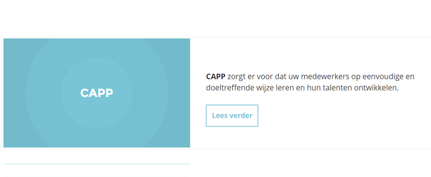

<div class="row medium-8 large-7 columns">
  <div class="blog-post">
    <h3 class="title--bloghead"> Reflectie <small class="title--blogdate"></small></h3>
    
    <p class="text--blog">
        Deze stage periode verliep bijna vlekkeloos, ik vond het jammer dat deze periode afgerond moest worden. Door deze stage ben Ik er achter dat ik aan werken toe ben. Toch moet dit laatste schooljaar nog even afgerond worden, nog even bikkelen.
        <br><br> Natuurlijk is deze reflectie een terug blik op het doen en laten van deze stage periode. Persoonlijk denk ik dat ik erg voor uit ben gegaan op de manier van designen en het kijken naar designs. Ik heb meer respect gekregen voor App's en website nu ik weet hoeveel tijd hier achter zit. Ook naar Technologische kunst kijk ik nu heel anders. De waardering is veel groter geworden. Ook denk ik dat deze technologische ontwikkelingen onze toekomst gaan worden. Sommige kunstenaars en kunsthistorici vrezen dat snel ontwikkelen van technologie een negatieve invloed gaat hebben op de wereld van kunst zoals we het nu kennen. Ze zeggen, door het omarmen van technologie vernietigen wij de menselijkheid in kunst. Ik denk persoonlijk en ik ben niet de enige, dat de ontwikkeling van technologie juist heel positief is. Iedereen ziet technologie als middel, een middel die de menselijkheid uit het werk gaat nemen. Wat nou als we technologie minder als middel gaat zien maar meer als een doel. Misschien ontstaat er wel een nieuwe kunststroming. Waarom iets tegen houden als het er toch gaat komen.
        <br><br><b>Mijn belangrijkste leerervaringen</b><br>
        Door dat ik in een totaal nieuwe omgeving zat en met totaal nieuwe software aan de slag moest heb ik mij snel moeten aanpassen aan de omgeving. Dit is gelukt, door het snelle aanpassen en het snel leren van de verschillende scripts mag ik bij dit bedrijf blijven werken. Dit is een fantastische kans, ik blijf niet alleen up-to-date met de software, maar het is ook goed voor mijn CV. Na deze opleiding wil ik denk ik ook verder in de technologie.   <br><br>
        De uiteindelijke vorm van mijn stageverslag is een website. Door voor een website als uitgangspunt te gaan heb ik niet voor de makkelijke weg gekozen. Alleen al uit deze vorm kan je zien wat ik allemaal geleerd heb. Door een strakke en minimalistische design te gebruiken in mijn site, leg ik de focus op mijn verslag. Als je op je rechter muisknop klikt en inspect element kiest, zie je een klein deel van de html en css die ik gebruikt heb voor deze site.
    </p>
  </div>
</div>
